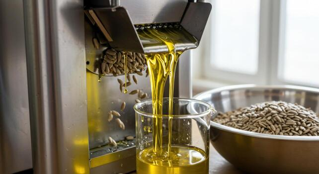
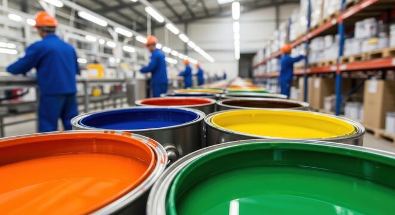
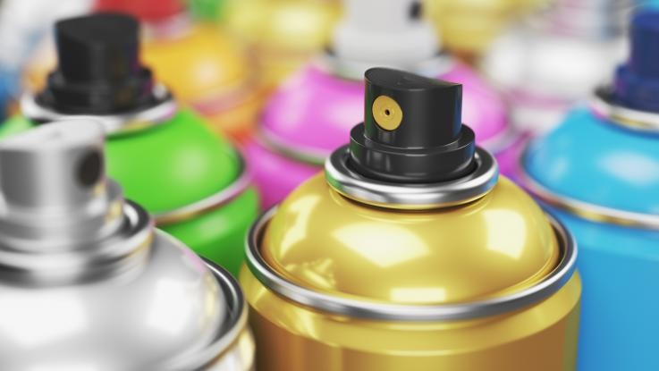

ยกระดับประสิทธิภาพการผลิตของคุณด้วยสารทำละลายคุณภาพสูงจากบางจาก ครอบคลุมทุกความต้องการของอุตสาหกรรม
ขอใบเสนอราคา / ปรึกษาผู้เชี่ยวชาญSolvent หรือตัวทำละลาย คือสารเคมีที่ช่วยละลาย สกัด หรือพาสารอื่นให้ทำงานได้อย่างมีประสิทธิภาพ และระเหยออกไปหลังจากทำหน้าที่เสร็จสิ้น โดยไม่เกิดปฏิกิริยาเคมีกับสารที่ละลาย Solvent จึงเป็นส่วนสำคัญในกระบวนการผลิตของหลายอุตสาหกรรม ตั้งแต่สี ยาง อาหาร ไปจนถึงการขุดเจาะน้ำมัน
ผลิตภัณฑ์ที่ตอบโจทย์ความต้องการเฉพาะของแต่ละอุตสาหกรรม



ค้นหาสารทำละลายที่ตอบโจทย์และตรงกับประเภทธุรกิจของคุณได้ทันที
กรอกข้อมูลเพื่อให้ทีมงานระดับองค์กรของเราติดต่อกลับพร้อมใบเสนอราคา
Email: b2bsales@bangchak.co.th
Tel: 02-XXX-XXXX